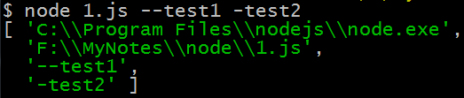

Nodejs系列-5-Process模块
process 对象是一个全局变量，它提供有关当前 Node.js 进程的信息并对其进行控制。 作为一个全局变量，它始终可供 Node.js 应用程序使用，无需使用 require()。 它也可以使用 require() 显式地访问。、
常用属性和方法
process.argv
process.argv 属性返回一个数组，其中包含当启动 Node.js 进程时传入的命令行参数。 第一个元素是 process.execPath。 第二个元素将是正在执行的 JavaScript 文件的路径。 其余元素将是任何其他命令行参数：
node 1.js --test1 -test2

process.env
该属性返回包含用户环境的对象。可以修改此对象，但这些修改不会反映到 Node.js 进程之外。
在webpack中经常可以看到通过改写该属性来加载不同的配置：
process.env.NODE_ENV === 'production'
我们也可以为不同的机器设置不同的环境变量来区分测试和生产环境
process.exit()
process.exit() 方法以退出状态 code 指示 Node.js 同步地终止进程。 如果省略 code，则使用成功代码 0
process.cwd()
方法返回 Node.js 进程的当前工作目录。
console.log(`当前工作目录是: ${process.cwd()}`);
标准输入输出流
process.stdout and process.stderr 与 Node.js 中其他 streams 在重要的方面是不同的。console.log() 和 console.error() 内部分别是由它们实现的。
process.stdout
process.stdout.write("hello world",'utf-8',()=>{
console.log('\n输入完毕')
})
process.stdin
用户输入两个值，最终算出结果：
var num1 =0,num2=0;
process.stdout.write("请输入num1的值：")
//process.stdin 继承了 EventEmitter，所以有了on方法
process.stdin.on('data', (chunk) => {
if(!num1){
num1=Number(chunk);
process.stdout.write("请输入num2的值：")
}else{
num2=Number(chunk);
process.stdout.write("结果是："+(num1+num2))
}
});